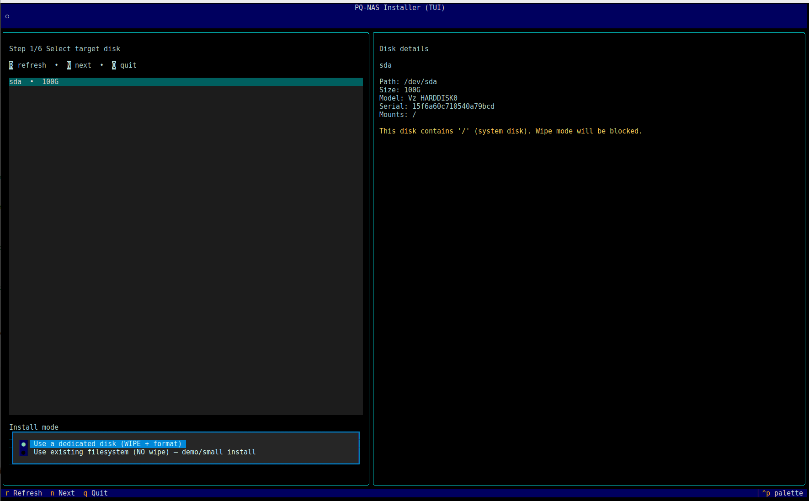
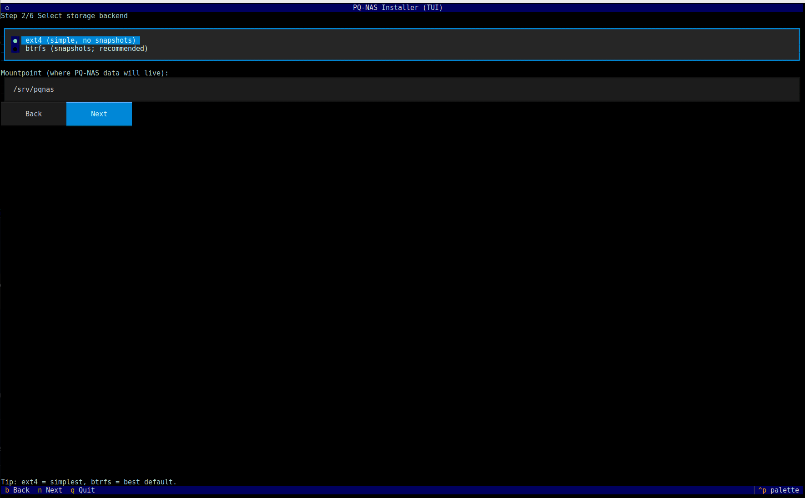
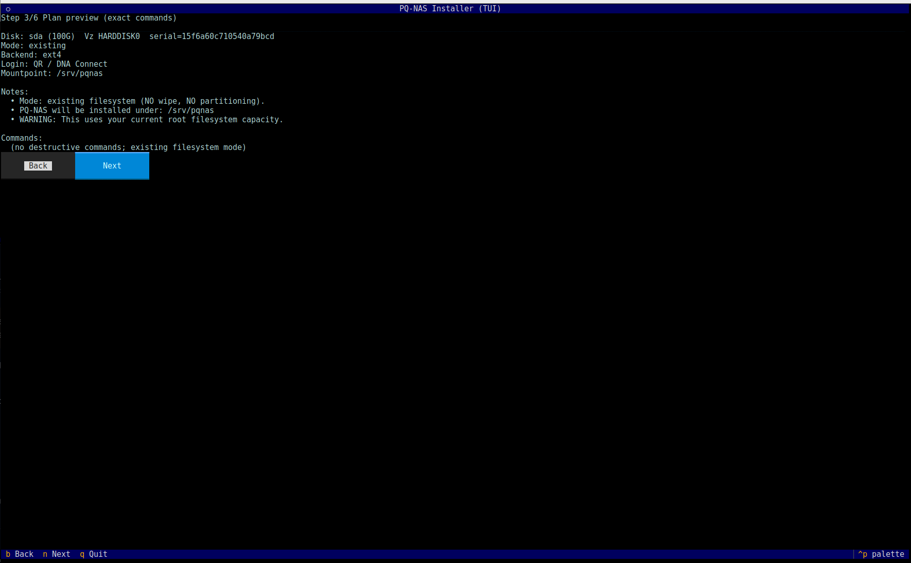
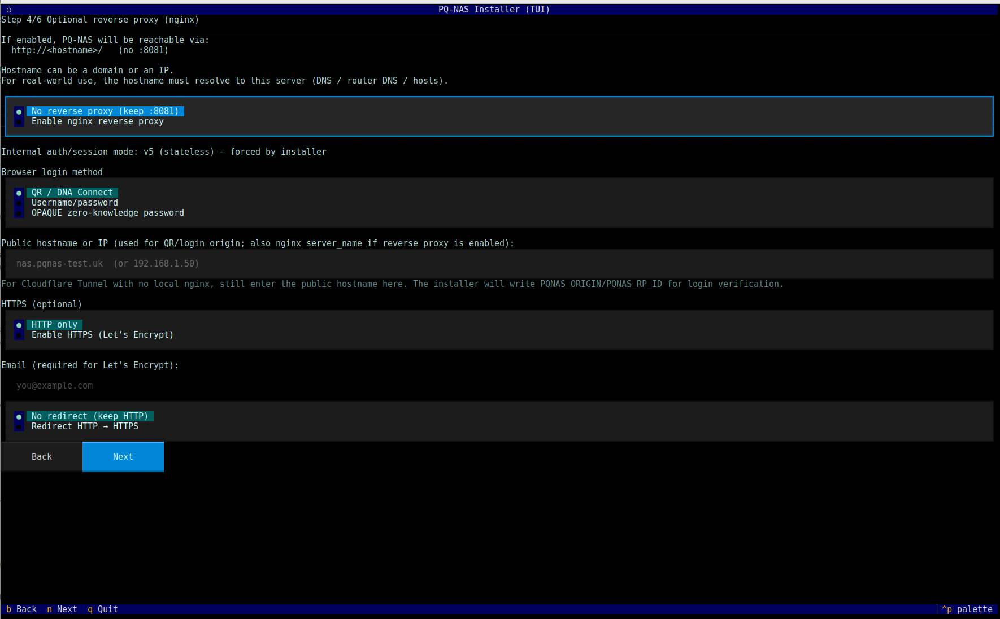
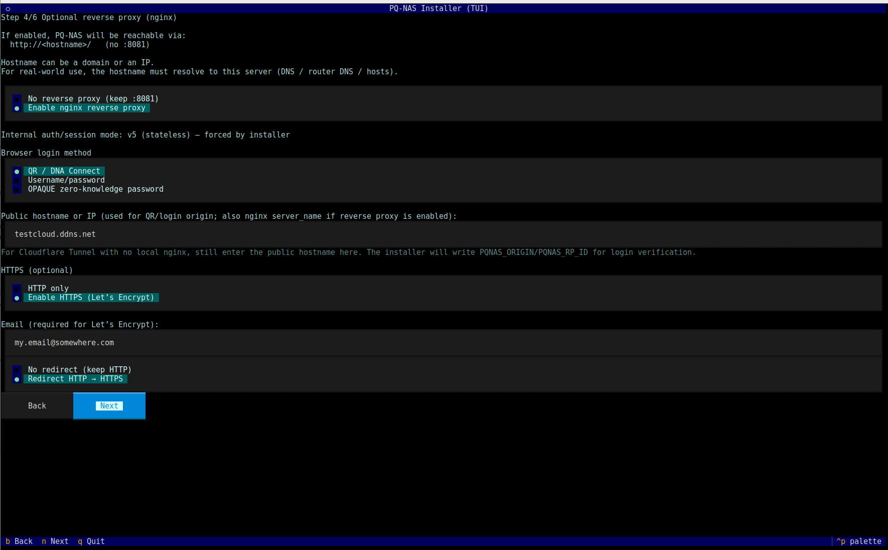
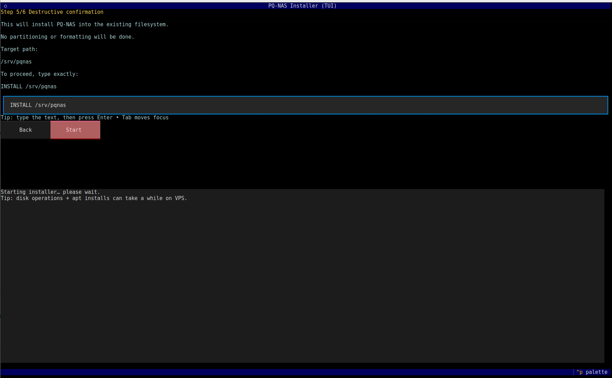
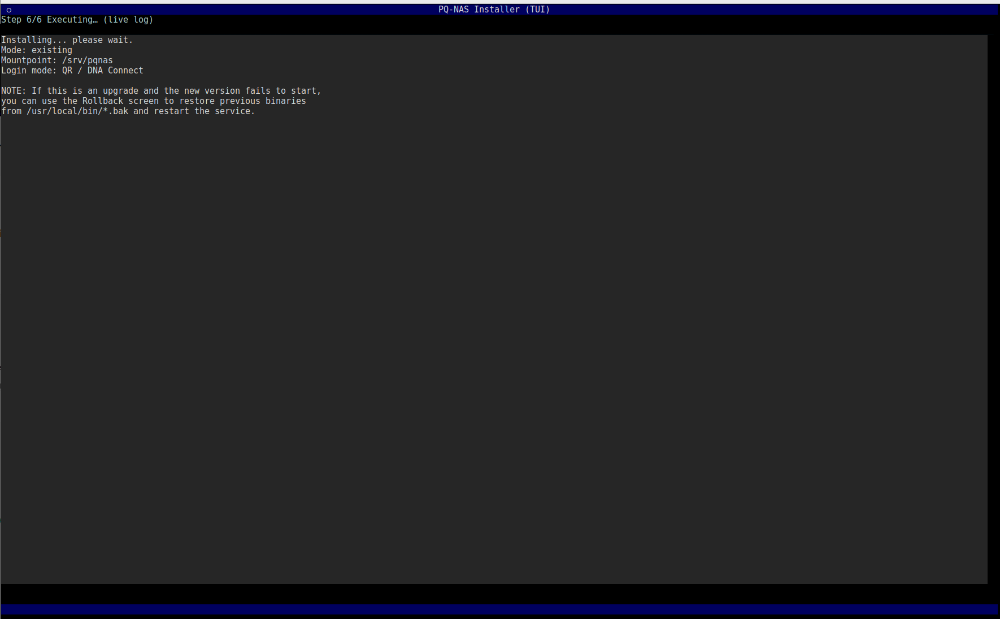
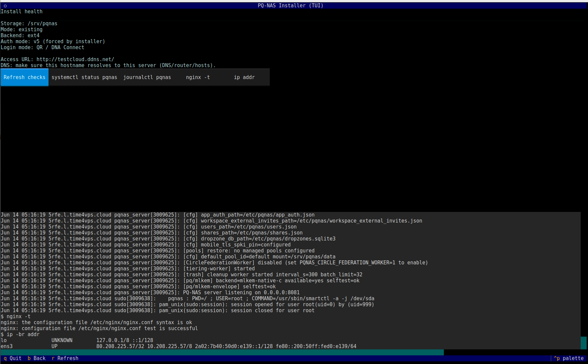

Palvelimen asennus
This page explains how to install a new DNA-Nexus server from the beginning. The exact screenshots and commands should be updated while the real installation is performed.
Before you begin
Prepare the target machine and decide the initial storage layout before installing DNA-Nexus.
- A server or virtual machine reserved for DNA-Nexus.
- Ubuntu Server or another supported Linux distribution.
- Network access from the administrator workstation to the server.
- Disk layout plan for system disk, data disks and future storage expansion.
- Administrator account with sudo access.
Installation steps
-
Download the latest DNA-Nexus release
Start by downloading the DNA-Nexus server release package from GitHub. The example below downloads version
1.2.0for Linux x86_64.wget https://github.com/DNA-Nexus/pq-nas/releases/download/v1.2.0/pqnas-1.2.0-linux-x86_64.tar.gz -
Extract the release package
Extract the downloaded tarball package with
tar.tar -xzf pqnas-1.2.0-linux-x86_64.tar.gz -
Enter the extracted directory
Change into the extracted DNA-Nexus installation directory.
cd pqnas -
Run the installer
Start the DNA-Nexus installer with administrator privileges.
sudo ./install.shTip: Enlarge the terminal window before running the installer. The installation process prints a lot of information and may show interactive choices, so a larger terminal makes the installation easier to follow.Screenshot placeholder: Add a screenshot of the installer running in the terminal.
Suggested filename:assets/images/installation/01-installer-terminal.png -
Select the target disk and install mode
The first installer screen lists the disks that are available for the installation. Select the correct disk carefully before continuing.

Use Tab and the arrow keys to move between the disk list, install mode options and navigation buttons. Use Space to select an option. Press N or choose Next to continue.
Important: The dedicated disk install mode may wipe and format the selected disk. Only choose a wipe/format option when you are sure the selected disk does not contain data you need.For a demo or small installation on an existing system, choose Use existing filesystem (NO wipe) – demo/small install. This mode installs DNA-Nexus without wiping the selected disk.
-
Select the storage backend
On the storage backend screen, choose which filesystem DNA-Nexus should use for its server data directory.

Choose Btrfs for most installations. Btrfs is the recommended backend because it enables snapshot support. Choose Ext4 only when you want a simpler setup and do not need DNA-Nexus snapshot features on this backend.
Snapshot note: DNA-Nexus snapshots are not available when the selected storage backend is Ext4. If snapshot support is required, use Btrfs for the storage backend that will hold snapshot-managed data.The Mountpoint field defines where DNA-Nexus server data will be stored. The default location is
/srv/pqnas.It is possible to install the server software on an Ext4 system disk and use separate Btrfs disks later for actual user data. This screen only selects the backend for the installer-managed DNA-Nexus data location shown in the mountpoint field.
Use the keyboard to select the backend, then choose Next or press N to continue.
-
Review the installation plan
Before the installer makes changes, it shows a plan review screen. Review this screen carefully before continuing.

Check that the selected disk, install mode, storage backend and mountpoint are correct. If anything looks wrong, choose Back and correct the previous selections before continuing.
Review before continuing: In existing filesystem mode, the installer does not show destructive disk commands. In wipe/format mode, review the command list especially carefully before continuing.Choose Next or press N only when the plan matches the intended installation.
-
Configure reverse proxy, hostname and browser login
The optional reverse proxy screen defines how DNA-Nexus will be reached from a browser. It also includes the browser login method selection.

Cloudflare Tunnel or external HTTPS proxy
If DNA-Nexus is placed behind Cloudflare Tunnel or another external HTTPS proxy, keep No reverse proxy selected. In this setup, the external tunnel or proxy handles the public HTTPS endpoint, while the local DNA-Nexus service remains available on its internal port.
Even when local nginx is not enabled, enter the public hostname in the Public hostname or IP field when browser login origin verification needs to use the public address.
Cloudflare Tunnel note: For a Cloudflare Tunnel setup without local nginx, keep local HTTPS disabled. HTTPS is handled by Cloudflare, not by the DNA-Nexus installer.Local nginx reverse proxy
If the server should configure a local nginx reverse proxy, select Enable nginx reverse proxy and enter the public hostname that resolves to this server.

If the installer should also configure HTTPS with Let's Encrypt, select Enable HTTPS (Let's Encrypt) and enter a valid email address. The email address is used for Let's Encrypt certificate registration and expiry notifications.
When HTTPS is enabled locally, choose whether HTTP requests should stay on HTTP or be redirected to HTTPS. For a normal public HTTPS installation, Redirect HTTP → HTTPS is usually the expected choice.
Browser login method
Select the browser login method that matches the intended authentication model for this installation. The available options may include QR / DNA Connect, Username/password and OPAQUE zero-knowledge password.
After the reverse proxy, hostname, HTTPS and login method settings are correct, choose Next to continue.
-
Confirm the installation
Before the installer starts, it shows a final confirmation screen. This is the last checkpoint before the installation begins.

Read the confirmation text carefully. The installer shows the target path and explains what kind of installation will be performed.
To continue, type the exact confirmation string shown by the installer. In this example, the required confirmation text is:
INSTALL /srv/pqnasAfter the correct confirmation text has been entered, the Start button becomes available. Select Start to begin the installation.
Important: Do not continue unless the target path and installation summary are correct. This screen is intended to prevent accidental installations to the wrong location. -
Wait while the installer runs
After the final confirmation, the installer starts executing the installation plan and shows a live log.

This phase may take several minutes. On a clean server or VPS, the installer may need to install packages, prepare paths, configure services and start the DNA-Nexus server.
Installation time: A clean installation can take approximately 5–10 minutes depending on server speed, package downloads and disk performance. -
Review the install health screen
When the installation has completed, the installer shows an install health screen. Review the summary before leaving the installer.

Check the storage path, selected install mode, storage backend, authentication mode, login mode and access URL. The health screen also provides quick checks for service status, logs, nginx configuration and network addresses.
Useful checks available from this screen may include:
- Refresh checks — refresh the displayed installation health information.
- systemctl status pqnas — check whether the DNA-Nexus service is running.
- journalctl pqnas — inspect recent DNA-Nexus service logs.
- nginx -t — test nginx configuration if nginx is used.
- ip addr — show the server network addresses.
Press Ctrl+Q to exit the installer when the installation is complete.
-
Follow the installer prompts
Continue through the installer prompts. Read each question carefully before confirming. The installer prepares the DNA-Nexus server files, service configuration and required runtime paths.
Screenshot placeholder: Add a screenshot of the installer choices if needed.
Suggested filename:assets/images/installation/02-installer-prompts.png -
Open the DNA-Nexus web interface
After the installer has completed, open the DNA-Nexus web interface in a browser and verify that the login page appears.
Screenshot placeholder: Add the DNA-Nexus login screen here.
Suggested filename:assets/images/installation/03-login-page.png
Verify the installation
After leaving the installer, run a few basic checks before giving the server to users. These checks confirm that the DNA-Nexus service is running, the local web interface responds and the selected storage path is mounted as expected.
Check the DNA-Nexus service
Confirm that the systemd service is active.
systemctl status pqnas --no-pagerIf the service is not running, inspect the latest service logs.
sudo journalctl -u pqnas -n 80 --no-pagerCheck the local web port
DNA-Nexus normally listens on its internal web port. Confirm that something is
listening on port 8081.
ss -tulpn | grep ':8081'Then test the local HTTP response.
curl -I http://127.0.0.1:8081/Check nginx, if enabled
If local nginx reverse proxy was enabled during installation, test the nginx configuration.
sudo nginx -tCheck the public hostname, if configured
If the server has a public hostname, test the public URL from the server or from an administrator workstation.
curl -I https://your-public-hostname.example/
Replace your-public-hostname.example with the hostname configured
during installation.
Check storage
Confirm that the DNA-Nexus data path exists and has enough free space.
df -h /srv/pqnas
findmnt /srv/pqnasIf the selected backend is Btrfs, you can also check Btrfs filesystem usage.
sudo btrfs filesystem usage /srv/pqnasNext steps
After the server has been installed, continue with the first login and initial administration pages.